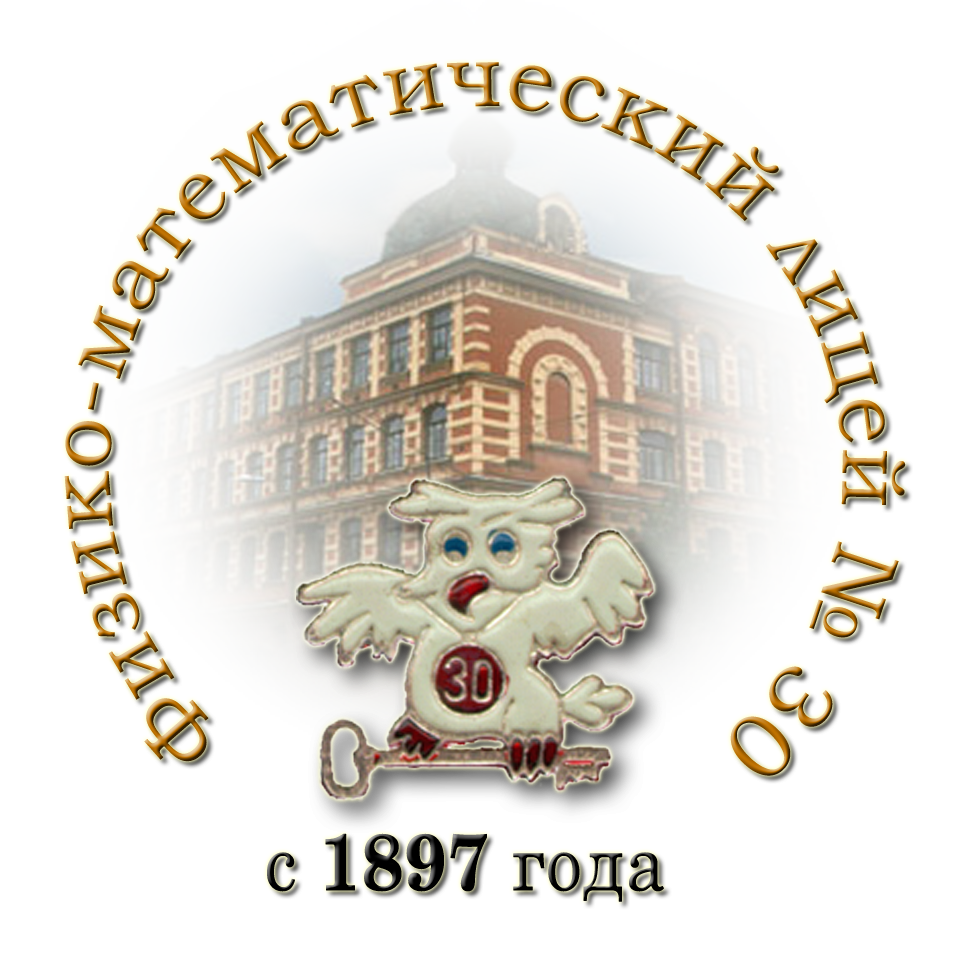
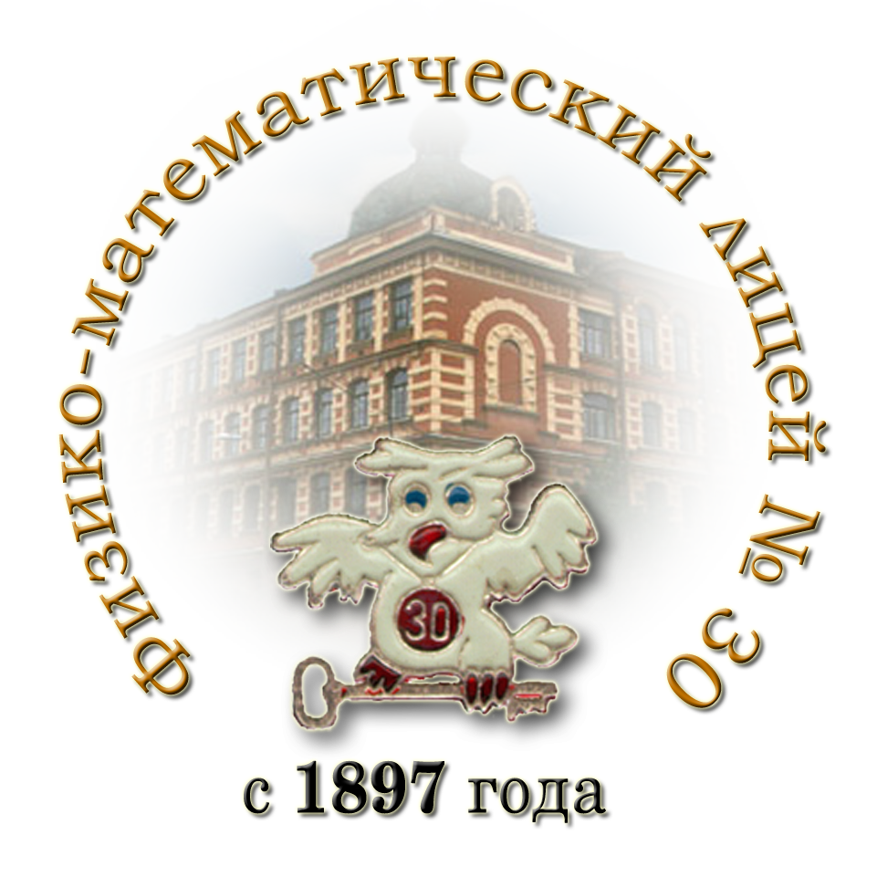

Язык программирования
Лекция №1. Введение в Python
Владимир Владимирович Руцкий rutsky.vladimir@gmail.com

|
 |
Лекция №1. Введение в Python
Владимир Владимирович Руцкий rutsky.vladimir@gmail.com
|
|
 |
Python ([ˈpʌɪθ(ə)n] — пайтон) — язык программирования (далее ЯП)
Разрабатывался с 1990 года (для сравнения: C — с 1969, C++ — с 1983)
Оригинальный автор: Гвидо ван Россум (Guido van Rossum)
factorial.py
|
python.exe factorial.py
|
Нет предварительного объявления типов — тип переменной выводится в процессе выполнения
# Функция может вернуть объект любого типа
result = f(x)
Строгая типизация
Недопустимо: 5 + "3"
Интерпретатор: "C:\Python33\python.exe"
Установка дополнительных библиотек будет рассмотрена на следующих лекциях
В раздаточном материале
Официальная документация (англ.): http://docs.python.org/
Перевод учебного пособия из офиц. документации для Python 3.1:
https://ru.wikibooks.org/wiki/Учебник_Python_3.1
(по нему построено введение в Python в этой лекции)
Книги на русском языке... мало, если будете смотреть обязательно обратите внимание на используемую версию Python
Способы выполнения программ:
интерактивное выполнение:
C:\>C:\Python33\python.exe
Python 3.3.4 (v3.3.4:7ff62415e426, Feb 10 2014, 18:12:08) [MSC v.1600 32 bit (Intel)] on win32
Type "help", "copyright", "credits" or "license" for more information.
>>> print("Hello, world!")
Hello, world!
>>>
выполнение файла со скриптом
Файл hello.py:
print("Hello, world!")
Запуск:
C:\>C:\Python33\python.exe hello.py
Hello, world!
C:\>
Запустите python.exe:
C:\> C:\Python33\python.exe
Python 3.3.4 (v3.3.4:7ff62415e426, Feb 10 2014, 18:12:08) [MSC v.1600 32 bit (Intel)] on win32
Type "help", "copyright", "credits" or "license" for more information.
>>>
">>> " — приветствие, интерпретатор ожидает ввода команды
1 2 3 | >>> print("Hello, world!")
Hello, world!
>>>
|
1 2 3 4 5 6 7 8 9 10 11 12 13 14 15 16 17 18 19 20 21 22 23 24 | >>> 2 + 2
4
>>> # Это комментарий
... 6 + 4
10
>>> 2 + 2 # а вот комментарий на одной строке с кодом
4
>>> (45 - 5 * 6) / 4 # деление возвращает число с плавающей точкой
3.75
>>> (45 - 5 * 6) // 4 # целочисленное деление (с округлением)
3
>>> # Целочисленное деление возвращает округленное к минимальному значение:
... 7 // 3
2
>>> 7 // -3
-3
>>> # Результат последнего вычисления хранится в переменной `_'
... _
-3
>>> # В интерактивной консоли результат вычисления выражения пишется на экран
... # Чтобы вывести на экран в скрипте можно использовать функцию `print()'
... print(5 * 6)
30
>>>
|
1 2 3 4 5 6 7 8 9 10 11 12 13 14 15 16 17 18 | >>> # Присваивание делается знаком `='
... a = 30
>>> a / 3
10.0
>>> # Значение может быть присвоено нескольким переменным одновременно
... a = b = c = 0
>>> a
0
>>> b
0
>>> c
0
>>> # Перед использованием переменной в выражении она должна быть определена
... d
Traceback (most recent call last):
File "<stdin>", line 2, in <module>
NameError: name 'd' is not defined
>>>
|
1 2 3 4 5 6 7 8 9 10 11 12 13 14 15 16 17 18 19 20 21 22 23 24 25 26 27 28 29 30 31 | >>> # Есть поддержка чисел с плавающей точкой, длинных, с фиксированной
... # точностью, рациональных, комплексных...
... 3 * 3.75 / 1.5
7.5
>>> i = 1j # мнимая единица
>>> i
1j
>>> i ** 2 # возведение в степень
(-1+0j)
>>> i.real
0.0
>>> i.imag
1.0
>>> (1 + 2j) / (1 + 1j)
(1.5+0.5j)
>>> 2 ** 200
1606938044258990275541962092341162602522202993782792835301376
>>> # Логический тип:
... a = (1 == 2)
>>> print(a)
False
>>> not a
True
>>> x = 30
>>> x > 0 # операторы сравнения: >, <, >=, <=, ==, !=
True
>>> 1 < x and x < 100 # логические операторы: and, or, not
True
>>> 1 < x < 100
True
>>>
|
1 2 3 4 5 6 7 8 9 10 11 12 13 14 15 16 17 18 19 20 21 22 23 24 25 26 | >>> # Строки можно задавать следующим образом:
... 'spam eggs'
'spam eggs'
>>> 'doesn\'t'
"doesn't"
>>> "doesn't"
"doesn't"
>>> '"Yes," he said.'
'"Yes," he said.'
>>> "\"Yes,\" he said."
'"Yes," he said.'
>>> '"Isn\'t," she said.'
'"Isn\'t," she said.'
>>> "first word \
... second word"
'first word second word'
>>> print("first line\n secondline")
first line
secondline
>>> r"line with \n in middle"
'line with \\n in middle'
>>> """Multiline with ' or "
... Yes.
... """
'Multiline with \' or "\nYes.\n'
>>>
|
1 2 3 4 5 6 7 8 9 10 11 12 13 14 15 16 17 18 19 | >>> # Конкатенация строк
... word = 'Help' + 'A'
>>> word
'HelpA'
>>> '<' + word * 5 + '>'
'<HelpAHelpAHelpAHelpAHelpA>'
>>> 'first' 'second'
'firstsecond'
>>> ('first') 'second'
File "<stdin>", line 1
('first') 'second'
^
SyntaxError: invalid syntax
>>> # Строки — неизменяемые
... word[0] = 'x' # word[0] — обращение к первому символу строки
Traceback (most recent call last):
File "<stdin>", line 1, in <module>
TypeError: 'str' object does not support item assignment
>>>
|
1 2 3 4 5 6 7 8 9 10 11 12 13 14 15 16 17 18 19 20 21 22 23 24 25 | >>> # Индексация в последовательностях (например строках):
... # +---+---+---+---+---+
... # | H | e | l | p | A |
... # +---+---+---+---+---+
... # 0 1 2 3 4 5
... # -5 -4 -3 -2 -1
... # v[i] - i-й элемент
... # v[i:j] - подпоследовательность начиная с i-го включительно,
... # и до j (не включительно) — полуинтервал [i, j)
... word = 'HelpA'
>>> word[4]
'A'
>>> word[0:2]
'He'
>>> word[2:4]
'lp'
>>> word[:2] # Первые два символа
'He'
>>> word[2:] # Всё, исключая первые два символа
'lpA'
>>> word[1:100]
'elpA'
>>> word[10:]
''
>>>
|
1 2 3 4 5 6 7 8 9 10 11 12 13 14 15 16 17 18 19 20 21 22 23 24 25 | >>> # Индексация в последовательностях (например строках):
... # +---+---+---+---+---+
... # | H | e | l | p | A |
... # +---+---+---+---+---+
... # 0 1 2 3 4 5
... # -5 -4 -3 -2 -1
... # v[i] - i-й элемент
... # v[i:j] - подпоследовательность начиная с i-го включительно,
... # и до j (не включительно) — полуинтервал [i, j)
... word = 'HelpA'
>>> word[-1] # Последний символ
'A'
>>> word[-2] # Предпоследний символ
'p'
>>> word[-2:] # Последние два символа
'pA'
>>> word[:-2] # Всё, кроме последних двух символов
'Hel'
>>> word[-100:]
'HelpA'
>>> word[-10] # ошибка
Traceback (most recent call last):
File "<stdin>", line 1, in <module>
IndexError: string index out of range
>>>
|
1 2 3 4 5 6 7 8 9 10 11 12 13 14 15 16 17 18 19 | >>> # Список — встроенный в язык тип данных
... a = ['spam', 'eggs', 1234, 30]
>>> # Список — это упорядоченная последовательность элементов.
... # Для списков действуют такие же правила индексации как для строк
... a[0]
'spam'
>>> a[1:3]
['eggs', 1234]
>>> # Но списки, в отличие от строк, изменяемые
... a[1] = 3030
>>> a
['spam', 3030, 1234, 30]
>>> a[:2] + a[3:] * 2
['spam', 3030, 30, 30]
>>> [1, 2] + [3, 4]
[1, 2, 3, 4]
>>> [1, 2] * 4
[1, 2, 1, 2, 1, 2, 1, 2]
>>>
|
1 2 3 4 5 6 7 8 9 10 11 12 13 14 15 16 17 18 19 20 21 22 23 24 | >>> # Функция range([start,] stop[, step]) создаёт "виртуальную" последовательность
... # (iterable) из натуральных чисел
... a = range(5)
>>> a
range(0, 5)
>>> # Функции, классы и модули в Python имеют способы встроенного документирования
... help(range)
Help on class range in module builtins:
class range(object)
| range(stop) -> range object
| range(start, stop[, step]) -> range object
|
| Returns a virtual sequence of numbers from start to stop by step.
|
| Methods defined here:
|
...
>>> # Функция list (конструктор класса) позволяет создать список по
... # последовательности
... list(range(3, 10, 2))
[3, 5, 7, 9]
>>>
|
1 2 3 4 5 6 7 8 9 10 11 12 13 14 15 16 17 18 19 20 21 22 23 24 25 26 27 28 29 30 | >>> a = list(range(10))
>>> a
[0, 1, 2, 3, 4, 5, 6, 7, 8, 9]
>>> # Заменим некоторые элементы:
... a[1:3] = [20, 30]
>>> a
[0, 20, 30, 3, 4, 5, 6, 7, 8, 9]
>>> # Удалим:
... a[1:3] = []
>>> a
[0, 3, 4, 5, 6, 7, 8, 9]
>>> # Вставим:
... a[1:1] = ['bletch', 'xyzzy']
>>> a
[0, 'bletch', 'xyzzy', 3, 4, 5, 6, 7, 8, 9]
>>> # Вставим (копию) самого себя в начало
... a[:0] = a
>>> a
[0, 'bletch', 'xyzzy', 3, 4, 5, 6, 7, 8, 9, 0, 'bletch', 'xyzzy', 3, 4, 5, 6, 7, 8, 9]
>>> # Очистка списка: замена всех значений пустым списком
... a[:] = []
>>> a
[]
>>> # Также, переменную можно удалить командой `del'
... del a
>>> a
Traceback (most recent call last):
File "<stdin>", line 1, in <module>
NameError: name 'a' is not defined
>>>
|
1 2 3 4 5 6 7 8 9 10 11 12 13 14 15 16 17 18 19 20 21 22 23 24 25 26 27 28 29 30 31 32 | >>> a = list(range(10))
>>> a
[0, 1, 2, 3, 4, 5, 6, 7, 8, 9]
>>> len(a) # Возвращает длину последовательности
10
>>> len('some string')
11
>>> # Списки, как и почти все контейнеры Python, могут хранить любые объекты
... a[1] = ['another', 'list']
>>> a
[0, ['another', 'list'], 2, 3, 4, 5, 6, 7, 8, 9]
>>> a[1][0]
'another'
>>> b = list(range(3))
>>> b
[0, 1, 2]
>>> # Некоторые операции со списками:
... # добавить в конец
... b.append(10)
>>> b
[0, 1, 2, 10]
>>> # добавить в конец списка элементы из другой последовательности
... b.extend([3, 7, 12, 1, 5])
>>> b
[0, 1, 2, 10, 3, 7, 12, 1, 5]
>>> b.reverse() # развернуть список
>>> b
[5, 1, 12, 7, 3, 10, 2, 1, 0]
>>> b.sort() # отсортировать список
>>> b
[0, 1, 1, 2, 3, 5, 7, 10, 12]
>>>
|
1 2 3 4 5 6 7 8 9 10 11 12 13 14 15 16 17 18 19 20 21 22 23 24 | >>> # Ряд Фибоначчи:
... # сумма двух элементов определяет следующий элемент
... a, b = 0, 1 # множественное присваивание: a = 0, b = 1
>>> while b < 10:
... print(b)
... a, b = b, a + b
...
1
1
2
3
5
8
>>> # while УСЛОВИЕ:
... # команды
... # Блоки в Python определяются отступом!
... pass # команда "ничего не делать"
>>> while True: # бесконечный цикл, можно прервать по Ctrl+C
... pass
...
^CTraceback (most recent call last):
File "<stdin>", line 1, in <module>
KeyboardInterrupt
>>>
|
1 2 3 4 5 6 7 8 9 10 11 12 13 14 15 16 17 18 19 20 21 | >>> # input() можно использовать для чтения ввода с клавиатуры
... s = input("Введите, пожалуйста, целое число: ")
Введите, пожалуйста, целое число: 42
>>> s
'42'
>>> # s — строка, переведём её к целочисленному типу
... x = int(s)
>>> x
42
>>> # Условная конструкция
... if x < 0:
... print('Отрицательное значение')
... elif x == 0:
... print('Ноль')
... elif x > 0:
... print('Больше нуля')
... else:
... print('Такого быть не может!')
...
Больше нуля
>>>
|
1 2 3 4 5 6 7 8 9 10 11 12 13 14 15 16 17 18 19 20 | >>> # Конструкция for используется для выполнения какого-то действия
... # для всех элементов последовательности.
... # for ПЕРЕМЕННЫЕ in ИТЕРИРУЕМОЕ-ВЫРАЖЕНИЕ:
... # команды
... a = ['cat', 'window', 'defenestrate']
>>> for x in a:
... print(x, len(x))
...
cat 3
window 6
defenestrate 12
>>> # Изменять содержимое контейнера по которому итерируется цикл
... # часто небезопасно
... for x in a[:]: # создадим копию списка
... if len(x) > 6:
... a.insert(0, x)
...
>>> a
['defenestrate', 'cat', 'window', 'defenestrate']
>>>
|
1 2 3 4 5 6 7 8 9 10 11 12 13 14 15 16 17 18 19 20 | >>> # В циклах можно использовать команды break и continue,
... # а также конструкцию else
... for n in range(2, 10):
... for x in range(2, n):
... if n % x == 0:
... print(n, 'равно', x, '*', n // x)
... break
... else:
... # циклу не удалось найти множитель
... print(n, '— простое число')
...
2 - простое число
3 - простое число
4 равно 2 * 2
5 - простое число
6 равно 2 * 3
7 - простое число
8 равно 2 * 4
9 равно 3 * 3
>>>
|
1 2 3 4 5 6 7 8 9 10 11 12 13 14 15 16 17 18 19 20 21 22 23 24 25 26 27 | >>> # Словарь — контейнер, хранящий пары (ключ, значение), и позволяющий
... # быстро находить по ключу соответствующее значение
... tel = {'jack': 4098, 'sape': 4139}
>>> tel['jack']
4098
>>> tel['guido'] = 4127
>>> tel
{'guido': 4127, 'jack': 4098, 'sape': 4139}
>>> del tel['sape']
>>> tel
{'guido': 4127, 'jack': 4098}
>>> list(tel.keys())
['jack', 'guido']
>>> list(tel.values())
[4098, 4127]
>>> list(tel.items())
[('jack', 4098), ('guido', 4127)]
>>> for name, phone in tel.items():
... print(name, 'has phone number', phone)
...
guido has phone number 4127
jack has phone number 4098
>>> 'guido' in tel
True
>>> 'sam' in tel
False
>>>
|
1 2 3 4 5 6 7 8 9 10 11 12 13 14 15 16 17 18 | >>> # Определение функции
... def fib(n): # вывести числа Фибоначчи меньшие (вплоть до) n
... """Выводит ряд Фибоначчи, ограниченный n."""
... a, b = 0, 1
... while b < n:
... print(b, end=' ')
... a, b = b, a+b
...
>>> # Теперь вызовем определенную нами функцию:
... fib(2000)
1 1 2 3 5 8 13 21 34 55 89 144 233 377 610 987 1597
>>> help(fib)
Help on function fib in module __main__:
fib(n)
Выводит ряд Фибоначчи, ограниченный n.
>>>
|
1 2 3 4 5 6 7 8 9 10 11 12 13 14 15 16 17 18 19 20 21 22 23 | >>> def f(a, b, c=5, d=[1,3]):
... print(a, b, c, d)
...
>>> f(1)
Traceback (most recent call last):
File "<stdin>", line 1, in <module>
TypeError: f() missing 1 required positional argument: 'b'
>>> f(1, 2)
1 2 5 [1, 3]
>>> f(1, 2, 'c')
1 2 c [1, 3]
>>> f(1, 2, d='D', c='C')
1 2 C D
>>> def f(a, b, *args):
... print(a, b, end=' ')
... for x in args:
... print(x)
...
>>> f(1, 2)
1 2
>>> f(1, 2, 3, 4, 5, 6)
1 2 3 4 5 6
>>>
|
1 2 3 4 5 6 7 8 9 10 11 12 13 14 15 16 17 18 19 20 21 22 | >>> # Значения по умолчанию вычисляются только один раз!
... def f(a, L=[]):
... L.append(a)
... return L
...
>>> f(1)
[1]
>>> f(2)
[1, 2]
>>> f(3)
[1, 2, 3]
>>> def f(a, L=None):
... if L is None:
... L = []
... L.append(a)
... return L
...
>>> f(1)
[1]
>>> f(2)
[2]
>>>
|
1 2 3 4 5 6 7 8 9 10 11 12 13 14 15 16 17 18 19 20 21 22 23 24 25 | >>> # Есть возможность для получения произвольного количества аргументов
... def f(a, *args, **kwargs):
... print(args)
... print(kwargs)
...
>>> f(1, 'a', 'b', 3, k1=1, k2=2, k3=3)
('a', 'b', 3)
{'k3': 3, 'k2': 2, 'k1': 1}
>>> # Кортеж — контейнер аналогичный списку, но не изменяемый
... a = (1, 2, 3)
>>> a
(1, 2, 3)
>>> a[0:2]
(1, 2)
>>> a[1] = 2
Traceback (most recent call last):
File "<stdin>", line 1, in <module>
TypeError: 'tuple' object does not support item assignment
>>> b = (1, [])
>>> # Кортеж содержит список объектов, и этот список изменить нельзя
... # Но можно менять сами объекты
... b[1].extend([30, 40])
>>> b
(1, [30, 40])
>>>
|
1 2 3 4 5 6 7 8 9 10 11 12 13 14 15 16 17 18 19 20 21 22 23 24 | >>> # В Python все хранимые в памяти вещи являются объектами
... # Тип объекта можно получить с помощью функции `type'
... type(1)
<class 'int'>
>>> type(1+2j)
<class 'complex'>
>>> type('aaa')
<class 'str'>
>>> # Каждый объекты имеет идентификатор, который можно получить
... # с помощью функции `id'
... id(1)
17528760
>>> id(1+2j)
17674480
>>> id(2-1)
17528760
>>> def f():
... pass
...
>>> type(f)
<class 'function'>
>>> id(f)
18917688
>>>
|
1 2 3 4 5 6 7 8 9 10 11 12 13 14 15 16 17 18 19 20 21 22 23 24 25 26 27 28 29 30 | >>> # Конструкция присваивания `=' на самом деле связывает имя и определённый объект
... a = [1, 2, 3] # связываем имя `a' с объектом списком
>>> id(a) # ID-объекта, на который ссылается имя `a'
18908584
>>> b = a # связываем имя `b' с объектом, на который ссылается `a'
>>> id(b) # ID-объекта, на который ссылается `b', такое же как и у `a'!
18908584
>>> a is b # проверяет, являются ли два объекта одним и тем же
True
>>> a is [1, 2, 3]
False
>>> # Так как `a' и `b' ссылаются на один объект, то при изменении его через
... # одно имя, он окажется изменённым и по другому имени
... a[0] = 'steel'
>>> a
['steel', 2, 3]
>>> b
['steel', 2, 3]
>>> # Числа, строки и некоторые другие объекты являются неизменяемыми,
... # при попытке их изменения создаётся новый объект.
... a = 1
>>> id(a)
17528760
>>> b = a
>>> a += 1
>>> id(a)
17528736
>>> a is b
False
>>>
|
1 2 3 4 5 6 7 8 9 10 11 12 13 14 15 16 17 18 19 20 21 22 23 24 | >>> def f(a):
... a.append(30)
...
>>> # Аргументы в функцию передаются по ссылке
... a = []
>>> f(a)
>>> a
[30]
>>> def g(b):
... b += 1 # перезапишет на что ссылается локальный `b'
... print(b)
...
>>> a = 10
>>> g(a)
11
>>> a
10
>>> # Имя функции — такая же ссылка на объект, как и имя переменной
... F = g
>>> F(10)
11
>>> F is g
True
>>>
|
{kind=link}